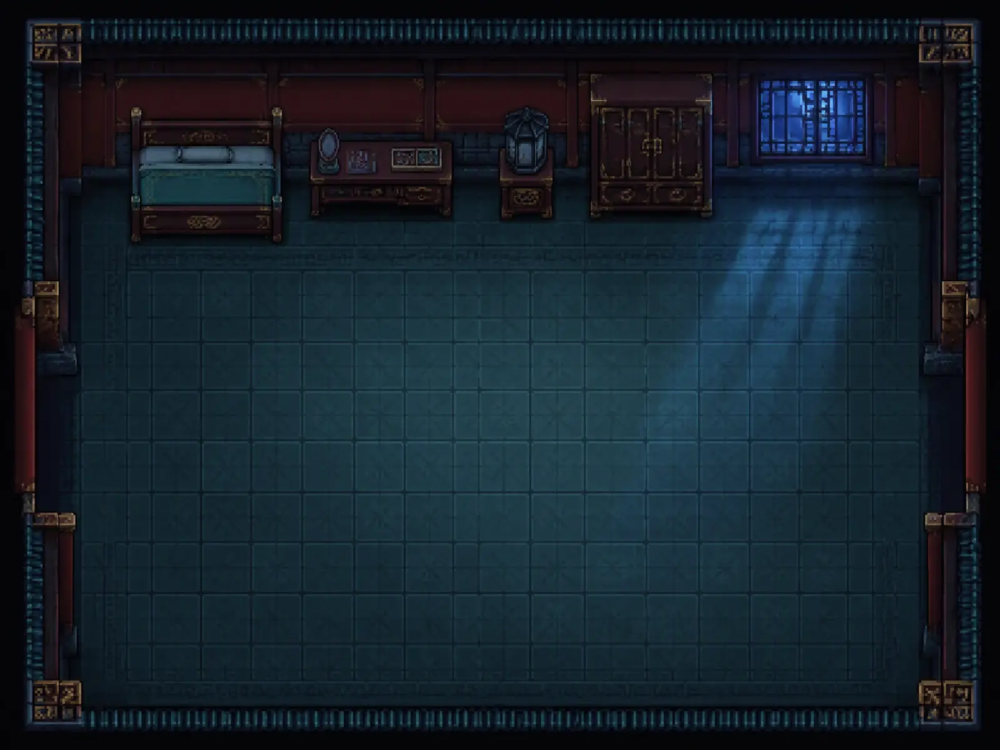

六处宫室，一桩待解的旧事
◆ 本机自动存档宫灯未灭，归路未明。
壹栖月寝殿子时 · 月入西窗

像素探索 / 机关解谜 / 中式皇宫
宫墙
夜未央一盏旧灯，六处宫室，一个待归的名字。
三年前，映霜阁掌灯人苏婉被记入「琉璃灯失职」一案。
三年后，你奉师命夜入深宫修灯，却被困在落锁的宫墙之内。
想离宫，先点灯；想沉冤昭雪，就找出被分开藏起的证据。
随身物品 0 件
点击物品选中，再调查场景中的物件来使用。
也可点击地面行走

三年前，映霜阁掌灯人苏婉被记入「琉璃灯失职」一案。
三年后，你奉师命夜入深宫修灯，却被困在落锁的宫墙之内。
想离宫，先点灯；想沉冤昭雪，就找出被分开藏起的证据。
点击物品选中，再调查场景中的物件来使用。